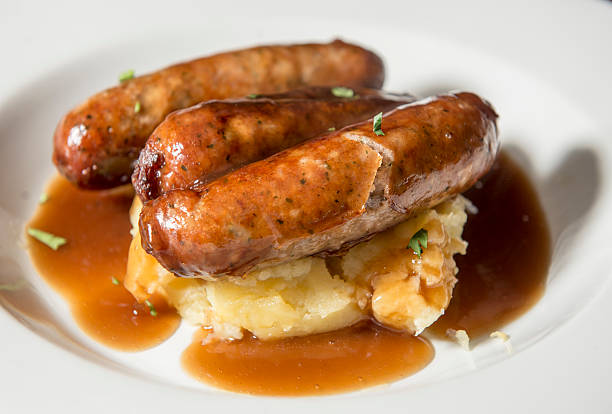

Sausage and Mash

Mmm scrummy yummy sausage and mash
This dish is a classic
- a few sausages
- a few large potatoes
- a bitta butter and spash of milk
- 2-3 tablespoons of mascarpone
- gravy granules and boiling water
- Peel potatoes. Slice into evenly sized pieces. Put in large pan of cold water, just enough to cover them, pinch of salt. Turn up heat til they boil, then turn down to simmer for 20 minutes.
- Put sausages under grill. Turn occasionally.
- When a sharp knife goes through the potatoes like butter, they are ready. Drain, add a knob of butter and a splash of milk. Mash using a vegetable masher.
- Poke the sausages into the mash. Make gravy and pour on top.